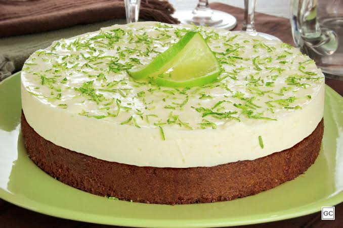

Mousse de Limão
Três ingredientes no liquidificador e uma base de biscoito. Sobremesa gelada em 10 minutos.
Tempo de preparo
10 minutos
Louça suja
1 liquidificador
Porções
6 porções
Dificuldade
Fácil
Imagem da receita

Vídeo do preparo
Ingredientes
- 1 lata de leite condensado (395 g)
- 1 caixinha de creme de leite (200 g)
- 1/2 xícara de suco de limão
- 1 pacote de biscoito maisena (200 g)
- 3 colheres de sopa de manteiga derretida
Modo de preparo
- Triture o biscoito no liquidificador ou com um rolo.
- Misture o biscoito triturado com a manteiga derretida até formar uma farofa úmida.
- Forre o fundo de um refratário ou de taças com essa farofa e reserve.
- No liquidificador, bata o leite condensado, o creme de leite e o suco de limão por 2 minutos.
- Despeje o creme sobre a base de biscoito.
- Leve à geladeira por pelo menos 2 horas antes de servir.
Dica: o creme engrossa sozinho por causa do limão. Se ficar líquido, é sinal de pouco suco — acrescente mais um pouco e bata de novo.